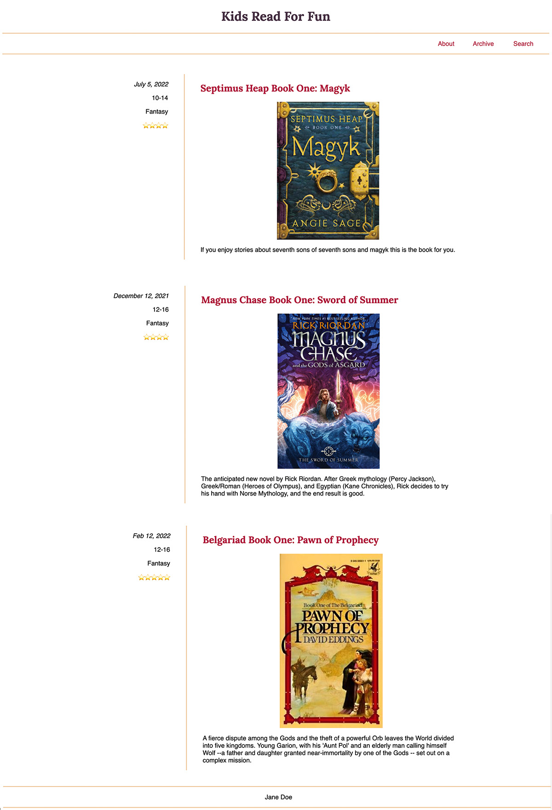

Prove - Build a Blog Part 2
Dynamic Content
File Management:
Your project should be in a folder called 'blog'. Make sure you have an index.html page and separate CSS and JS files.
Instructions:
Use the following object array in your JS file to bring in each book article dynamically.
On a real site the articles data would be pulled from a database and requested as needed. In order to keep ours simple we will just store it in a variable locally.
const articles = [
{
id: 1,
title: 'Septimus Heap Book One: Magyk',
date: 'July 5, 2022',
description:
'If you enjoy stories about seventh sons of seventh sons and magyk this is the book for you.',
imgSrc: 'https://upload.wikimedia.org/wikipedia/en/5/5f/Magkycover2.jpg',
imgAlt: 'Book cover for Septimus Heap 1',
ages: '10-14',
genre: 'Fantasy',
stars: '⭐⭐⭐⭐'
},
{
id: 2,
title: 'Magnus Chase Book One: Sword of Summer',
date: 'December 12, 2021',
description:
'The anticipated new novel by Rick Riordan. After Greek mythology (Percy Jackson), Greek/Roman (Heroes of Olympus), and Egyptian (Kane Chronicles), Rick decides to try his hand with Norse Mythology, and the end result is good.',
imgSrc:
'https://books.google.com/books/content/images/frontcover/xWuyBAAAQBAJ?fife=w300',
imgAlt: 'Book cover for Magnus Chase 1',
ages: '12-16',
genre: 'Fantasy',
stars: '⭐⭐⭐⭐'
},
{
id: 3,
title: "Belgariad Book One: Pawn of Prophecy",
date: "Feb 12, 2022",
description:
"A fierce dispute among the Gods and the theft of a powerful Orb leaves the World divided into five kingdoms. Young Garion, with his 'Aunt Pol' and an elderly man calling himself Wolf --a father and daughter granted near-immortality by one of the Gods -- set out on a complex mission.",
imgSrc:
"https://images-na.ssl-images-amazon.com/images/I/41ZxXA+nInL.jpg",
imgAlt: "Book cover for Pawn of Prophecy",
ages: "12-16",
genre: "Fantasy",
stars: "⭐⭐⭐⭐⭐"
}
];
Computational Thinking
Using our ponder activity as a guide think through how you can bring in each book onto the web page dynamically.
This demonstrates how it will look. Remember this is not static content.
Submit your project
Commit your changes, then push them to GitHub. Wait a few minutes then check to make sure they show on Github pages.
After verifying that your page updated, submit the URL to your page in Ilearn. The URL will look something like this:
https://githubusername.github.io/wdd131/blog
Make sure to replace "githubusername" with your actual github username.